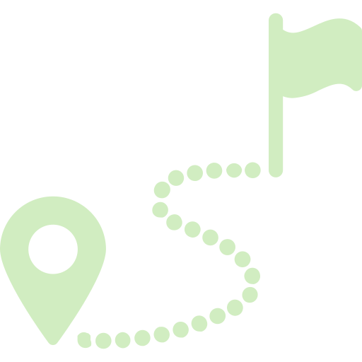

 Nuestros Destinos
Sendero La Soledad, Río Claro
Recorrido ecológico ideal para el avistamiento de aves y naturaleza exuberante.
Sendero Corozal, Río Claro
Sendero en el sector El Corozal, perfecto para la observación de aves y flora local.
Sendero de la Mula
Caminata guiada por hermosos paisajes rurales y actividades de naturaleza.
Cascada Molinos
Impresionante caída de agua, ideal para fotografía y contemplación del entorno.
Parque Nacional Natural Los Nevados
Senderismo de altura y avistamiento de fauna en uno de los parques naturales más emblemáticos de Colombia.
Nota: Los senderos de Río Claro son para avistamiento de aves y la naturaleza.